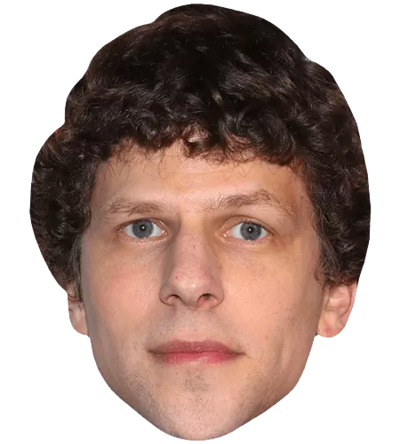

<body>
  <center>
    <font color="red" size="6" face="comic sans ms"
      ><br />Welcome to my jesse eisenberg fansite</font
    >
  </center>
  
</body>
<style>
  body {
    height: 200vh;
    background: url(https://media1.tenor.com/images/669f9e9981a7cb4bfe804c72fb79dbdc/tenor.gif?itemid=7811841);
    background-size: cover;
  }
  img {
    position: absolute;
    width: 20vw;
    left: 40vw;
    transform-origin: center;
    display: block;
  }
</style>

<script>
  (async () => {
    await CSS.animationWorklet.addModule("wk.js");
    const scrollSource = document.scrollingElement;
    const timeRange = 10000;
    const scrollTimeline = new ScrollTimeline({ scrollSource, timeRange });
    const jesse = document.querySelector("img");

    new WorkletAnimation(
      "parallax",
      new KeyframeEffect(
        jesse,
        [
          {
            transform: `translateY(100vh) scale(${0.8 +
              0.8 * Math.random()}) rotate(0) `
          },
          {
            transform: `translateY(50vh) scale(${0.9 +
              0.8 * Math.random()}) rotate(900deg) `
          }
        ],
        { duration: timeRange }
      ),
      scrollTimeline
    ).play();
  })();
</script>
